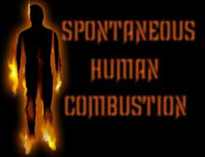
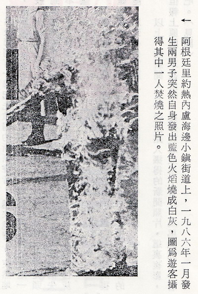
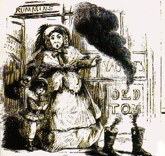
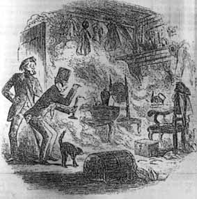
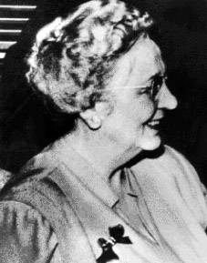
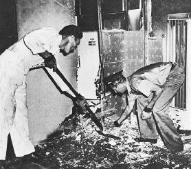
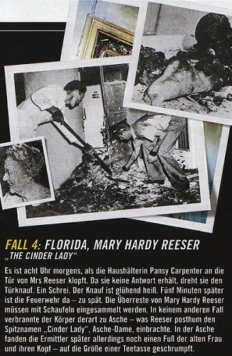

从人体蓝火自焚医学记录
推论“佛家火焰三昧”
冯冯
慈忍 / 誊录
(一)西方的人体蓝火自焚医学记录
以前我在“内明月刊”发表过两篇拙文讨论人体自焚成灰之谜，引起海内外读者普遍的兴趣。其实不但是读者对这种神秘事件感到兴趣，西方的科学家对它的研究和兴趣更大，纷纷发表研究报告，他们重视“人体自焚成灰”的事实，而予以分析研究。虽然迄今仍未能获得结论，至少他们经过多方调查之后，承认确实有这种不可思议的奇象存在；而不如一般世人武断地予以否定；或斥之为迷信。不过，由于资料太少，很难搜集，更难系统化地公布。
一九八六年一月，南美洲阿根廷的街道上行人道边，有两个行人男子，突然全身喷出蓝色火焰，刹时间化为飞灰。路人目击者不少。自焚成灰者的甥儿当时与之同行，抢救亦来不及。他眼看着舅父全身喷出蓝色火焰，蓝光一盛，在短短一瞬间，舅父就成为一小堆灰烬了。适巧有游客在附近，抢拍得一张照片，寄给美国的一家报纸刊出。这件最新的人体突然自焚化灰个案，轰动了全世界各国的科学家与医学家，不少飞往研究那堆自焚的余烬，这件个案又再重新燃点科学界对自焚奇象的研究兴趣。下面的一段，是摘译自美国报纸有关该案的新闻：
(“每周世界新闻”一九八六年三月四日号) ( 注【53】)
街上人群惊骇的望着两个男子突然爆炸焚烧成为两团火球，这是两个人同时在同一地点自焚！
人体自燃的案件，自古已有，记录可追溯到十七世纪，但是一九八六年一月份发生的这一件双料人体自焚案，比任何一件案都骇人听闻。
地点在南美洲阿根廷国都里约热内庐附近的海岸小村镇纽厄华?铁卡(Nueva Teka)，街上行人看见两个中年男子突然在行人道上爆炸自焚，经查悉死者一名为四十七岁男子佐治?华拉斯(Jorge Valastro)，另一名是同行友人，三十九岁男子维多利奥?哥拉(Vitorio Gorra)。
目击者最接近现场的，是佐治的十九岁甥儿昂利克?泰迪那(Enrique Medina)，下面是他的追述：
“我舅父佐治与哥拉是好友，从小在一起，像兄弟一般，但是时常打架，他俩在一起喝酒，喝醉了又打架，打完又和好如初，人家看着他们打架好笑。
那天晚上他俩又去酒吧喝酒，然后又争吵，跑到街上用拳头解决，打了一阵，又大笑起来，互相拥抱着，他们拥抱在彼此的臂膀内，站在行人道上，突然地，他们的恤衫背部开始冒烟和冒出一股燃烧皮肉的恶臭来。
然后听到有一丝起先微弱的嘶嘶声音，越来越响。突然地，他们两人的背脊喷射出蓝色火焰来，就像喷火筒的蓝焰一般，可怖极了，在一瞬之间，我舅父与他的好人哥拉全身从头到脚都被蓝色火焰吞没了，前后只燃烧了几秒钟，蓝焰就消失不见了，舅父和哥拉的身体也失了踪，只剩下两堆小小的白色灰烬。”
有些专家认为人体自焚成灰，是由于人体内有特殊的复杂电子爆炸系统（Electro Dynamic System），积蓄了太多的能，以至他们实际上是‘活炸弹’，随时都会爆炸。”
以上一段新闻，有一张由路人摄得的新闻照片，这里复影，但是报上原图已不甚清晰，复影制版效果不会好，马马虎虎看一看吧。（见图）

看完上文，请看一看西方科学界与医学界所搜集的可靠资料所列出的“人体突然自焚化灰”记录参考文献名单请看本文附件英文参考文献清单）。这份纪录，以时代年次而简列如后：
（1）十七世纪，德国柯特兰（Courtland）地方，两位贵族男子突然身发火焰，化为灰烬。（资料来源：【10】)
（2）十七世纪，德国：一位士兵突然口喷火焰，全身焚为灰烬。【11】
（3）公元一六九二年：丹麦京城哥本哈根市，一位贫妇然全身喷火成为灰烬。【12】
（4）公元一七二五年二月二十日：法国，一位米列太太（Mme Millet）突然全身喷火化灰，详情未载。【13】
（5）公元一七四四年四月九日，英国，一位名叫葛丽丝?皮特（Grace Pitt）的女子全身喷火化为灰烬，详情未载。【14】
（6）公元一七四九年二月七日，法国，八十高龄的布娃嵩夫人（Mme de Boiseon）突然全身喷火化灰，详情未载。【15】
（7）公元一七六三年，意大利，六十二岁的康妮利亚?班迪伯爵夫人（Countess Cornelia Bandi）全身喷火化灰，详情未载。【16】
（8）公元一七七三年三月二日，英国戈温治利(Coventry),五十岁女子玛利?古鲁斯（Mary Clues），突然全身喷出火焰，化为灰烬，只余下一条腿及臀部少许未化灰，发生地点是在卧室与火炉之间。室内及物件并无焚毁。【17】
（9）一九七九年二月，法国女子玛利?柔芙列（Mary Jauffret）身体自焚成灰，详情未载。【18】
（10）公元一七八0年，爱尔兰的利玛力克（Limerick, Ireland）市：一座贫民救济医院的管理员欧尼尔先生（O’Neil），被一位主客唤醒到一个贫妇的房间去，他看到贫妇皮柯克太太（Mrs. Peacock）的身体躺在地板上，全身喷出红铜颜色的火焰，瞬即化为灰烬。【19】
（11）公元一七八二年六月三日，法国，杜亚小姐（Mme Thuars）全身喷火化为灰烬，详情未载。【20】
（12）公元一七八八年，英国，一个正在打扫厨房的女工，突然从背部喷火，她的主人进来看见，向她叫喊，但他无法扑灭火焰，女工瞬即化为灰烬。【21】
（13）公元一八0二年三月十六日，美国，麻省；一位老妇的遗体，停柩在殡仪教堂之时，突然体内发出火焰，全身焚化成为灰烬，寿衣全部化灰，但是灰堆内仍可见人体形状，室内充满异香。【22】
（14）公元一八一三年，英国，一位老翁在床上全身起火，烧成灰烬，但是，床铺及家具均无烧毁。【23】
（15）公元一八三五年一月五日，美国田纳西州那斯维（Nashville, Tenn. USA）市，数学教授H先生自身发火烧成灰烬。【24】
（16）公元一八三六年，意大利塞斯那市（Cesena, Italy），六十二岁的杰雅利伯爵夫人（Countess Cornelia Zangari）在其房内化为灰烬一堆，只剩下两腿及头部一部分。地板与家具均无焚毁迹象，但房内有烟薰之迹，并有异常怪味。【25】
（17）公元一八五一年二月二十五日，法国巴黎市，一个油漆房屋的工人在酒吧喝酒之时，自夸可以吞下一支烛火，他刚吞下不久，嘴巴就喷出蓝色火焰来，在不到半小时之内，他的头部和胸部就被蓝焰烧成焦灰，蓝焰一直焚烧下去，把全身骨头肌肉都烧成灰烬。【26】
（18）公元一八八五年十二月二十七日，美国伊利诺州渥太华（Ottawa, Illinois, USA），发现一位鲁尼太太（Mrs. Patrick Rooney） 的遗骸，在她的厨房地面一个三英尺乘四英尺大小的烧洞下，遗骸是烧焦的头骨，两块烧焦的脊骨，几块脚骨，与一堆灰烬，室内有烟薰痕迹。【27】
（19）公元一九0八年三月三十一日，英国，布赖特市（Blythe, England）,残疾女子玛利哈特（Mary Hart），被发现坐在椅中，自身发出火焰，她的姐姐将火扑灭，抱她到床铺去，然后跑出去呼救。当邻人们奔来之时，他们发现玛利全身已化为灰烬，只剩下头部及几支手指，但是床单并无被烧毁，墙上则有烟薰痕迹。【28】
（20）公元一九三三年，英国，作家汤普?索斯敦（Temple Thurston）患感冒刚复原不久，突然坐在椅中自身发火，烧成灰烬。【29】
（21）公元一九三七年七月三十日，英国，诺福克?布洛市（Norfolk-Broads, England），一位少妇 ，与丈夫及儿女在湖中荡舟，她突然全身喷火，瞬即烧成灰烬一堆，丈夫与孩子均无恙，小船亦无烧坏。【30】
（22）公元一九三八年九月二十日，英国，钦姆新福市（Chelmsford, England），一位少妇在跳舞中间，突然全身喷发蓝色火 焰，旁人无法将火扑灭，在几分钟之内，该妇全身已烧成灰烬，不能辨识人形。【31】
（23）公元一九四二年，美国伊利诺州布隆明顿（Bloomington, Illinois, USA）,在银行做清洁工打扫的五十九岁男工，阿洛?蔡洛耶（Aura Troyer），在地下室工作时，突然自身出火，烧毁身穿之衣服。被人发现时，他仍未死，临终时他说：“不知怎样，突然发火烧起来的”。【32】
（24）公元一九四二年，英国三处城市：阿平屯（Orpington）,富涵（Fulham）,布赖屯（Brighton），各均发生人体自焚成灰个案。死者各别为八十三岁的老妇芽伦?凯利（Ellen K. Kelly）,六十六岁老妇安妮?高士晓太太（Annie Coleshill），九十四岁老妇玛利?福茨太太（Marry Forge），均猝系然发火焚烧成灰，详情未载。【33】
（25）公元一九四三年一月十三日，美国缅因州鹿湖镇（Deer Lake, Maine, USA）,八十二岁老翁亚伦?史摩（Allen M. Small），被发现在其家中烧死，上半身连人带衣烧成焦炭。尸体压住的地毡烧焦了，房内其他物体则毫无所损。【34】
（26）公元一九四三年二月一日，美国纽约州兰卡斯特市（Lancaster, N.Y. USA）三十九岁的瘫痪男子亚瑟?包加特（Arthur Baugard）,被发现在其住宅内烧成焦炭，不能辨认。家具什物毫无焚烧痕迹。【35】
（27）公元一九四七年十月十七日，英国，利物浦港市（Liverpool, England），一个十岁大的男孩，被看见突然全身喷火焚烧，该店并无火灾烧及其他物件。【37】
（28）公元一九五一年七月一日，美国佛罗里达州圣彼得堡（St. Petersburg, Fla. USA），六十七岁老妇玛利?李瑟（Mary Reeser）,突然自身发火焚成灰烬。【38】
（29）公元一九五三年四月，美国玛利兰州,汉诺佛镇（Hanover, Md, USA），一个名唤伯纳?希斯（Bernard Hess）的男子，死于车祸，验尸时，发现尸体头部撞碎，内脏震碎，而且全身有三分之二被烧成焦炭或三级烧灼。但是，他的上身衣服丝毫无受到焚烧，汽车内也无起火焚烧痕迹。【39】
（30）公元一九五三年，美国南卡洛琳州格兰维市（Greenville, S.C. USA），五十岁男子威门?乌特（Waymon Wood），被发现在他的紧闭汽车内前座坐着烧成黑炭，尸身不成人形，所余无多，只是黑炭与灰烬。焚烧的高温使挡风玻璃烧成起泡及向内弯陷。但汽车内物件并无烧毁迹象，油箱内的半箱汽油亦无被火烧及。【40】
（31）公元一九五六年，美国奥亥奥州披利山维市（Pleasantville, Ohio, USA）妇人施施?洛泽士太太（Mrs. Cecil Rogers）被自身火焰烧成灰烬，其睡床也被烧焦若干处，但附近家具均无烧损。【41】
（32）公元一九五六年四月二十八日，美国加利福尼亚州宾尼西亚（Benicia, Ca, USA），五十九岁男子哈劳?何（Harold Hall） ，被发现于厨房地板上，胸部，两臂，面部均已烧焦，但仍未死，他无法解释何事发生，他不久死去。【42】
（33）公元一九五六年十二月，美国夏威夷州火奴鲁斯市（Honolulu, USA）,七十八岁的瘫痪老翁杨锡金（Young Sik Kim 译音）,被发现全身为蓝色火 焰所包围，温度太高，无法接近，消防队在十五分钟后到达时，老翁全身连同其轮椅全皆化成了灰烬，仅剩下他的两脚未烧成灰，仍然置于轮椅脚踏上。室内并无其他物件被焚迹象。【43】
（34）公元一九五九年一月三十一日，美国三藩市（San Francisco, Ca, USA） ，在三藩市一家医院留医的年老病人积?拉伯（Jack Larber），由看护员给与一杯牛奶喝下之后，大约五分钟之后，看护员回来，发现他全身卷裹在蓝色火焰之中，不久化为灰烬。【44】
（35）公元一九五九年春天，美国伊利诺州洛克福市（Rockford, Ill, USA ），四个月大的男婴力奇?普鲁乙（Rickey Pruitt），突然自身喷出蓝色火 焰，烧成灰烬，但是床单及摇篮床均无烧灼迹象。【45】
（36）公元一九五九年十二月十三日：美国密西根州，庞狄亚克镇（Pontiac, Michigan, USA）三十岁男子比利?彼得臣（Billy Peterson），在自己的汽车内开放废气（一氧化碳）自杀。验尸发现他的头部，背部，臂部，腿部，及内脏，均呈现三级焚烧伤害（成为焦炭），但是他的衣服毫无焚迹 ，他的头发亦毫无焚毁，仍然堆放在他的焦炭尸身上面。【46】
（37）公元一九六零年十一月二十四日，美国肯德基州派克维（Pike County, KY, USA）五个男子的尸体，被发现在一辆汽车内，全身烧成焦炭，内脏亦然，所携金属枪弹被火熔化，各人并无企图挣扎逃命之姿势。【47】
（38）公元一九六二年八月三日，美国俄亥奥州，洛克兰（Lockland, Ohio, USA），七十四岁老妇玛利?马田太太（Mary Martin） ,被人听到大声呼救，并被发现她坐在厨房一把椅子内全身着火焚烧致死，全身成灰，椅子亦烧坏。其他各物毫无烧迹。【48】
（39）公元一九六三年十二月四日，美国纽约州，长岛格连湾(Geen Cove，Long Island，N.Y. USA)六十六岁，老翁汤玛士?史维泽斯基(Thomas Sweizerski)被发现被烧死成为焦炭，但是衣服无损坏，室内亦无火烧痕迹。【50】
（40）公元一九六九年十二月十七日，加拿大多伦多市（Toronto, Ont. Canada），一位房东发现年老住客约翰?戈玛（John Kormar）,在房中全身烧成焦炭，但房内并无火焚迹象。【51】
上面摘录简译的四十件真实的人体自焚个案，都是经过各国官方调查过公布，及纪录在官方档案，医学档案，医学刊物的。并非臆造。不过，这四十件个案，年代只从公元十七世纪起，迄公元一九六九年为止，并未包含一九六九年至现在一九八六年期间的人体自焚个案报告，亦不是完整的。有关这方面的研究学者们，研究医史资料，目前只做到迄一九六九年为止，仍在继续寻查，六九年以后的可靠资料之中，目前仍未公布。

以前的拙文“人体自焚成灰之谜”，曾详述美国宾特利医生自身发火自焚成灰一案。（收入拙作“禅定天眼通之试验”一书内，天华公司出版，刊有宾特利医生自燃遗迹黑白照片，此处不再赘述。）本文要详述的一宗人体自燃成灰个案，是前述“第二十八个案玛利?李瑟太太自焚事件”，这是纪录最详尽的个案。
李瑟案报告，原载于美国著名“真实月刊”（True）：一九六四年五月号。原名为“令人迷惑不解的自燃死亡案”，作者为亚兰?艾克特（Allan W. Eckert: “The Baffling Burning Death”）。
兹将该份报告摘译为中文如后：
“一九五一年七月二日，美国佛罗里达州圣彼得堡市（按：在美国东南角，古巴之北）东北樱桃街（Cherry St. NE, St Petersburg）一千三百号，一家公寓的业主卡宾特太太（Mrs. P. M. Carpenter）, 在她的房客兼好友玛利?哈地?李瑟太太（Mrs. Mary Hardy Reeser ）的单房柏文内度过愉快的一个黄昏小时，李瑟太太是一位寡居六十七岁的慈祥老太太，身躯肥胖，李瑟太太友善可爱地谈及她从前在沙派尼亚州家乡的荷兰人家庭背景。这一晚在座听她谈话的人，有房东卡宾特太太，和李瑟太太的医生儿子与媳妇。
李瑟太太告诉儿子说已经如常地在八点钟吞服了两粒药片，或者在九点钟再服两片才去睡觉。三位客人在九点钟告辞离去。其时，李瑟太太就座于她的有扶手的摇椅内，面对打开的两个窗子之一，她旁边有一张小小的木制小几。她身穿一件人造纤维的睡袍，上披一件棉质外套，脚穿一套黑色的布质拖鞋，其时她正在吸着一枝香烟。次日早晨将到八点钟之时，一个“西联电报公司”（Western Union）的送信男孩来敲房东卡宾特太太的房门，他说：“有一封电报给李瑟太太，我敲她的房门没有人回答，你代收下好吗？”
卡宾特太太说可以代收。但是她有些诧异，这不像是李瑟太太呀，李瑟太太一向并不是很熟睡的，怎会听不到敲门？
卡宾特太太持了电报去敲李瑟太太的房门，先是轻敲，后来重敲，敲了很久，都没有人应门，她心知不妙，就用手去扭门钮，但是立刻就灼疼得反弹回来！那只门钮铜球太烫手了，烫烧了她的手，她惊叫了起来。在附近油漆房子的两个工人闻声赶来。
他们合力把房门撞开，发现了恐怖的场面，虽然两扇窗子开着，室内的温度仍然热得无法忍受，在一扇撇开的窗子跟前，堆着一堆灰烬，还有椅子的残骸。
消防队的救火员于上午八点零七分到达，警员亦随即抵达现场，这件显然不是寻常的火灾案子，那张巨大椅子被烧得只剩下煆炼得变色的钢丝弹簧圈，小茶几是失踪了，李瑟太太的身体变成了灰烬，只剩下几块小小的烧焦成黑炭的脊背，她的头颅均匀地缩小到像一只桔橙那么大小──这是最奇怪的。她的左脚则未被烧毁，仍然穿着拖鞋。
能将人体和物件烧成这样子，势非数千度不可，但是，屋内的其他物件都无被焚痕迹，距灰烬四英尺的天花板与窗帷墙壁，均无烧毁，但是都蒙上了一层怪味的油烟。四尺界线以下的椅子压住下面的地毡并无被烧穿。在十英尺以外的一面墙镜则裂碎了，可能是被热力引起。十二英尺以外的梳妆台上，有两支粉红色的蜡烛，蜡质都溶化了变成烂烂一堆，但是烛心的纤维毫无燃烧痕迹。四英尺界线以上的墙边塑胶电灯掣掩盖都熔化了。不过里面的电灯掣并无损坏，电流仍然流通，墙脚暖气电炉开关掣也未受损害，插线于插头的一只电钟已经停了，指针停在四点二十分（计算起来应是清晨四时二十分，因为昨夜此钟仍行走着。）插入另一只插头之后，电钟又再行走。
放在现场重点不远的报纸，放在午睡沙发床上面的被褥，床单和窗帷，都没有被烧到，虽然当房东太太与两个男工破门而入之时，迎面冲来一阵高热的热浪，却没有人看到有烟，也没有嗅到燃烧的恶臭。灰烬上面也没有余火未熄的火焰红炭。
面临这一件神秘离奇的案子，警察局长雷克特（Police Chief J. R. Reichert）立刻请联邦调查局（FBI）协助调查。(注二)
李瑟太太的残骨及骨灰 (The remains of Mrs. Reeser)
李瑟太太的残骨及骨灰，地毡与椅子的残部等物，都给送往联邦调查局的化验室去做显微化验。
头一份化验结果报告并无任何发现，不过，提出了难解的谜团。李瑟太太再世时体重一百七十五磅，而现在的遗骸：包括缩小如橙的头颅与并无烧掉的左脚，几片烧焦成炭的脊椎骨，几粒焦的内脏残余（可能是肝），与骨灰，通通算在内，却只有不到十磅重量！
国家保险调查局（National Board of Underwriters） 的纵火案调查专家顶尖人物爱德华?戴维斯（Edward Davies）来到参加调查。一般的纵火案件很难瞒得过他的锐眼，可是，这一宗案子，可把他难倒了。
“我只可说，死者是死于火焚，”他说，“但是，我无法判断火是怎样发生的。”
之后，来了一位专家。那就是来自该地对岸布拉丹屯市（Bradenton, Tempa Bay）探亲的著名解剖医学专家威顿?戈洛曼博士（Anatomist Dr. Wilton Marion Krogman）。戴维斯立刻请戈洛曼帮助，后者同意看一看。
医学博士戈洛曼立刻研究各种有关当局的调查报告书，予以分析。
是否雷殛呢？不是！出事的那天七月一日晚上或清晨都无暴风雨或雷电。
李瑟太太是否因为服用安眠药而陷入深眠状况于椅中，香烟跌下烧着睡袍引起火灾？
这个可能性也很少，因为，要造成这样结果的火，必须有华氏三千度以上的高热，才可将她烧成灰烬。倘若一般火焰可烧到此一高热，老早已将房间各物甚至全座楼宇都烧毁了，而现在，室内并无任何烧毁痕迹。
还有，两扇窗子是敞开的，若有火灾，应有黑烟从窗子冲出，但是没有人看见有烟冒出，也无人嗅到烧焦的臭味。那么，李瑟太太是否可能被人从他处烧死之后，移送遗骸来此呢？这一点已被各项调查所否定。
是否触着电线呢？也不可能，倘若她是触电，保险丝必会被烧断。但是全室的保险丝都无恙。也没有任何撞线触电会造成那么高的温度。
戈洛曼医学博士终于服输了，他对警察局长雷克特说：“李瑟太太怎么会烧成灰烬的呢？怎么连骨头都化灰呢？而周围附近的物体又毫无焚烧痕迹？这些问题，我反覆研究，都无法找出合理解释这些事实。”
这位医学博士后来于一九六四年五月一日写了一封信给“真实杂志”声明自己并非此类问题的专家，亦非医生，对于李瑟个案，只是无法找到答案，既不能肯定，亦不能否定是否人体自燃，在他的著作一篇中（另刊于医学历史纪案期刊一九六四年），他亦提及此案之研究及不解之惑。
他无法明了为何李瑟太太烧成灰烬竟然毫无浓烟被发现，又无焚烧皮肉的恶臭。更使他困惑的就是：老妇人的头颅怎么会缩小得像一只橙那么小，而毫无被焚烧的痕迹。他说：
“就我所知，倘若人体被焚烧，不可能如此留下头部完整无损，更不可能如此齐齐整整等称地缩小那么多：在高热烧烘压力之下，头壳骨是会爆裂为许多碎片的，因为高热熔化了头部的软体部分，而且高热使内部的空气膨胀，势必爆炸。我曾经用死人的头颅来实验多次，都一一爆炸了，毫无例外，我从未见过一个人体被烧成这样的细灰，也从未见过人头会缩到那么小，这些情形都是违反常理的，我认为这是最使我骇异的奇象。”
上述李瑟太太的个案，罗宾特利医生个案，同为美国近代最著名的，资料完整的人体自焚成灰奇案，迄今仍无人能对此两案提出完满之答案。
(二)佛家的火焰三昧实录
关于人体自焚成灰的纪录，中国有没有呢？在中国的现代文献当中，我接触的不够，资料欠缺，只找到后列的几则。这并非说中国没有人体自焚个案，只是纪录文献太少。
一九五零年十月二十二日，香港华侨日报报道称：一九四九年四月十八日“中国东北哈尔滨南郊二十余里之大南沟屯，有一座龙雨茅蓬，其主持果舜法师自焚成烬，乡人翌日见其体只余心脏未焚化”。不过此段纪录并未说明是否自身发火自燃，有人认为并非自燃，而是举火自焚，但彼时国人无甚知晓人体自焚之事，对此亦不重视。报导可能根据臆测居多，或称果舜用豆油三斤半及木柴百斤举火自焚。但此等油柴分量，安能烧达两千度以上之高热以致全身化灰？顶多只可将人烧成焦炭而已。因此，我推测果舜可能是身体自燃，设或以豆油木柴引火，引发体内自燃，亦有可能。越战前期，数位越南比丘在西贡街头，当众自淋汽油点火自焚殉教，以汽油之高燃性，产生火焰热达千度以上，亦未将比丘烧成灰烬，只烧成焦炭，由此可以反证果舜并非被豆油木柴烧成灰烬，而极可能是身体发火自焚成灰。
倘若对于果舜个案存疑，不妨看看可靠的一则记载，这是虚云和尚年谱（岑学吕居士编）内，民国十三年甲子，虚云老和尚八十五岁的纪事。兹录虚老自撰原文部分如后：
“春戒期毕，具行禅人自化，于为文记之：
“具行禅人行业自化记”
师名日辩，字具行，会理籍，幼失怙恃。依曾氏姓，继以女配，生二字，家贫苦，余至鸡山，伊全家八人在寺工作。宣统元年己酉岁，藏经回山。传戒，师年二十，领全家八人乞求出家，师是年二十一岁，不识字，耳极聋，貌丑，日种菜苦行，夜礼拜念观世音菩萨，习坐，闲则学课诵，不要人教，自极精勤。至民国四年乙卯岁，告假出外参学，至民国九年， 余住昆明云栖寺，师回助，任种菜职，能上殿课诵，暇则缝剪及造竹器，不辞劳苦，自种菜园，余菜则送人结缘，不蓄余物，口无多言，及在下院胜因寺种菜，见其密行难得，是年戒期，请为尊证，比丘戒过，即告假往下院。
至三月二十九日，午参后，往胜因寺大殿后晒坎后，自取禾秆数把，披袈裟跌坐，左手执引磐，右手敲木鱼，面向西念佛。自放火，寺中数十人，无见闻知者。墙外人见内放大火光，进看不见师。至殿后，见 趺坐火炭上不动，衣物如故，惟木鱼磐柄成灰。
下院人来报，余因初八菩萨戒，不能下山，以书请财政厅长王竹村，水利局长张拙仙，暂代料理，张王见斯奇异，即向唐督说，唐率全家观看，巍然近前，至身取引磬，忽而，全身倒下，成一堆骨灰。感众大生信心，唐提倡由政府为办追悼三日，瞻礼者数万人，唐将引磐作序，永存省图书馆保存 。“
虚老并作一首挽诗，请参阅“虚云和尚年谱”。
署名弘西居士亦有一篇“附题具行大师行业自化记”，其中一段云：“……本年戒期，请师为尊证，上堂戒徒请开示，师曰：‘吾半路出家，一字不识，但知一句阿弥陀佛耳。’于自化前，将所有衣被用物售出，持资赴观音堂，设斋供众，众疑不存一物，恐有去意，问师何往，但笑不语。
“戒期圆满之次日，当夏历三月二十九日，午参后，密往殿后自焚，下院诸师不知，日暮，寻师不见，寮房关锁，寻至后园，见烟起，始得师焚身处。时，师身 趺坐于禾秆上，手执引磐木鱼，寺外人民见寺内放光，竞进寺内观看，谓是何光。觅师不得，至后园，见师端坐火炭上，巍然不动，异香远闻。
王竹村居士往观，形状如生，见此奇异，即白唐帅，率全家参观，木鱼经架僧鞋皆已成灰，唯一引磐坠地……“
以上抄录自“虚云年谱”，青年读者若有不习惯看文言文的，请参阅拙着“空虚的云”（天华公司出版）的白话文重述，或等候“内明月刊”连载拙作“虚云和尚”登载。
具行禅师的自焚成灰案，当年，公元一九二四年曾轰动云南与全中国，昆明报纸均有详载，可惜已无法找到旧报。此事当年感动了云南总督唐继尧与省府各大员都去瞻仰，数万人参拜。或者读者之中有些云南耆英仍会记得此事，或保有照片，若然，请提供给“内明月刊”登出。
具行禅师的自焚个案，算是中国文献中最完整的一案，特征有下列数点：具行预知化期，全身化灰，但形貌栩然如生，直到唐继尧触动其引磐，它才全身忽然倒下，化为一堆灰烬，这是与西洋各案不同的，西洋各案并无此奇异之形貌如生的灰烬身体不倒之情形。
还有，具行所持去就坐的干禾秆，是用作打坐用的，禾秆并无化灰（请看上文弘西居士文句：“时师身跌坐干禾秆上”）。设或具行是用稻草自焚，数把稻草，怎能发生数千度之高热把人烧成灰烬？稻草若着火，焚烧不久，这是常识，以片刻之稻草之火，岂可把人身烧成灰？显然不可能是用稻草自焚的。焚后又怎会“形状如生”？顶多烧死了他，使他倒在地上全身半焦而已。
我认为具行是自身发出三昧真火烧成灰烬，而非升火所焚。具行自焚成灰之时，年方四十九。僧腊十四年而已，一位只会念阿弥陀佛的文盲禅师，居然得此证果，岂可说念佛无用呢？世人每每好高骛远，轻视净土宗念阿弥陀佛法门，这是多么不幸。
佛经及佛论之中，有不少关于自身发出火焰成灰的记载，我手头缺书，只能找到数则：
“传法正宗记”曰：“释迦以化期为近，乃命迦叶‘以清静法服及金镂僧伽梨衣付汝’。一旦往拘尸罗城，右胁而卧，泊然大寂，纳之金棺，待迦叶至，而后三昧火燔然而焚，舍利光烛天地。”
佛陀预知化期，将法眼奥秘及袈裟付与大迦叶。后来佛陀到了拘尸罗城双树林，右胁而卧，进入涅槃，他的应身（肉身）被弟子们殓入金棺内，大迦叶来到之后，佛陀的肉身自发三昧真火，化为灰烬，留下八万四千颗舍利，光明照遍天地。下引述一段经文可为证：
后分涅槃经下卷曰：“尔时如来，以大悲力，从心胸中，火踊棺外，渐渐荼毗，经于七日，焚妙香楼，尔乃示尽”（妙香楼即安置金棺之处）。
长阿含经云：“佛在摩竭国毗陀山中，入火焰三昧。”释氏要览云：诸罗汉入灭时，多入此三昧（光 焰三昧），灰烬其身。
佛经佛论又称此种自发三昧真火之“火焰三昧”为“火光三昧”“火光定”。
“大唐西域记”三卷记阿难尊者之入灭：“ 即升虚空，入火光定，身出烟焰，而入寂灭。”
“本行集经”四十卷曰：“……如来尔时，亦入如是火光三昧，身出大火。”
佛经上说“火生三昧”修法，就是说，不动尊之三昧。由身出火焰。
“底里三昧经”卷上说：“不动亦自身遍出火焰光，即是本尊，自住火生三昧！此真言行人，亦于诸尊若欲作降伏即须自身做无动尊，住火轮中，亦名火生三昧。”
三昧真火出于不动之禅坐，此段已说明了。这种三昧真火，“能烧一切世界，使灰烬无余。”（见“义释”卷七），是温度很高，最少数千度的火，有点像太空星云爆炸而较小规模。（请参阅收于天华公司出版，内明月刊原载的拙文“三昧真火”篇，──“禅定天眼通之实验”。
龙树菩萨著作解释大般若经的大智度论，卷三，“释初品”中，“共摩诃比丘僧”篇：共摩诃比丘僧，时，心，戒，见，道，解脱是名。
“须跋陀梵志经云：
……须跋陀梵志，年百二十岁，得五神通 ……到拘夷那竭国，树林中见阿难经行，语阿难言：“我闻汝师说涅槃道，今日夜半当取灭度，我心有疑，请欲见佛，决我所疑。”
阿难答言：“世尊身极疲，汝若难问，劳扰世尊。”
须跋陀如是重请至三，阿难答如初。
佛遥闻之，敕语阿难：“ 听须跋陀梵志来前，自在难问，是吾末后共谈，最后得道弟子。”
……。（世尊答问）：“……若无八正道，是中无第一果，第二、第三、第四果，若有八正道，是中有第一果、第二、第三、第四果！须跋陀！是我法中有八正道，是中有第一道果，第二 、第三、第四道果。余外道法皆空，无道，无果，无沙门，无婆罗门，如是我大众中，实作狮子吼！”
须跋陀梵志闻是法，得罗汉果，思唯言：我不应佛后般涅槃，如是思惟竟，在佛前结跏，趺坐，自以神力，身中出火，烧身而取灭度。”
从上面摘录数段佛经，已可见到：佛陀入灭是身放三昧真火化灰，须跋陀不忍见到佛陀入灭，而先行在佛陀面前全身放三昧真火入灭。后来的阿难也是以火光三昧入灭的，也是自焚成灰。
相信佛经内还有更多有关火光三昧的记载，尚待一一发现。
佛陀与菩萨罗汉的自身出三昧真火，情形与西方的人身自焚不同，佛家的自焚成灰，都是预知及完全自己控制的。西方的个案 之中，似乎并非人人是预知，亦不能澈底全身化尽，更无“形容如生”的奇异。显然，西方发现的是较低境界的自焚成灰，而多数不是深禅三昧的化灰，不过，其中有几件，可能是密行修定而的火光三昧。例如，一九六六年十二月五日，美国的宾特利医生自焚成灰个案，上文提及的一九五一年七月二日，美国佛州李瑟太太个案，可能就是密行修定者，其他的老年人亦可能是的。一九五六年十二月，火奴鲁鲁的华人老翁杨锡金，更可能是一向修持习禅念佛的居士，获得火 焰三昧证果，一九五九年十二月，密西根州的四个月大男婴自焚成灰，可能是前生的修持之力。今生错来了，所以趁早自焚入灭。
当然，并非凡是自焚的都是火光三昧，其中成者也有些是外道魔火所致，三昧真火，并非佛教所专有，外道和魔道也有的，只是证果位不同吧，上文所提西方个案，有很多都不是得正果，只是被蓝色火 焰毁灭而已。不能视为佛果，我予以提出，只是要证明，人体自燃或自焚成炭或灰，确有其事，并非荒诞。亦并非不科学，但若以各案来企望佛家修持三昧的火光三昧涅槃，就仍是太不够水平。佛家火光三昧的奥秘是仍有待更多的研究的。
（三）人体蓝火与佛家火焰三昧的分析比较
所谓自然焚烧现象，西方科学界的英文名称是“Spontaneous Combustion”。前一字是自然地发生之意，后一字是燃烧。
燃烧的成因及过程，是由于可燃物质与氧气的结合，气体的氧化爆炸而发生火焰，光与高热。物质的分子变为高度散射性。“自燃”之意，就是，物体在某种情况之下，自己导法燃炸，而无需 由外力或外热引发。举例说：一堆细碎煤粒，浸于油渍中或水中，就会慢慢发生氧化作用，发生温度，到后来，温度聚集，高达燃点，就会发生自燃火焰。又例如：乡下农庄的麦秆或稻草堆，潮湿已久，亦会氧化而自燃。
以上对自燃的解释，节译自“大英百科全书”。
煤矿常有发生爆炸大火灾祸，乡下农庄稻草堆常会引发火灾，都是熟知常见的自燃现象，毫无怪异。
一般人具有中学理化智识的也都知道有自燃现象，并且知道稻草堆自燃是氧化作用的结果，会产生火焰和高温。不过，一般人可能只知道氧化的焚烧，就是说，凡是燃烧必须有氧气才会发生。而可能不知道有些燃烧并非由氧化而成，亦无需氧气，而且，非氧气的其他气体，所作用发生的焚烧，温度远比氧化燃烧更高，在没有游离氧气存在的太空中，氢气的爆炸焚烧就是一例，温度高达数千度华氏。
触发自燃的，也不全都是氧化作用，在很多种情形中，触发自燃的关键乃是内在电流。
人体和其他动植物，身体内都含有流动不休的电流，（请参阅“内明”月刊，拙作“瑞典医学权威证实人体电流及磁场”，此处不赘）。可说每一个生物，无论是单细胞生物，微小如草履虫，或是巨大如人类，更巨大如象 、鲸，植物中微小至细菌，如绿藻（algae），巨大如橡树 、红木，都无不含有静电电流。就是被世人视为无情的石头沙土，也都含有电磁场，就是已死去的枯叶、枯木，动物尸体，也都含有若干电流及磁场。这是因为这些物质的组成之中，含有自然界的元素，离不开那 九十多种至一百多种的元素。举例说：血液中含有：钠、铁、钙……等等微量元素，细胞也是有各种元素构成的，石头的每一颗也是由元素的原子构成的，这些元素的原子内，都有电子。这些电子的活动 汇成电子之流，即是电流。
人体与任何生物都有电荷，是业经科学与医学多方证实的事实，而并非世人之无知而自以为知者所能谰言推翻的。
生物本能与思维，是由于遗传基因DNA与RNA的作用，和大脑小脑的作用。神经系统的反应，完全是放电现象。当受到外力刺激之时，神经末梢的细胞群就向大脑中 枢放出电流，这是钾与钠的交换所产生的，与氧无关，这些微弱电流，立刻传到大脑中枢：是痛？是痒？是冷？是热？是美？是丑？是悲？是喜？大脑中枢将反应的电流放出，传至身体各部门器官，如何应付：哭？笑？叫？骂？打？跑？跳？抓？……这些也都是科学证实的事实，无论什么逻辑哲学家的哲学如何高深，亦不能推翻的。这里只是简说。
生物体内既有可证实的电流，有电流就可能会有迸发火花之可能。当然这种可能性，还得加入或然率的因素。不能说每一股电流天天都会“撞电”发火。而且，电流迸火，也必有其“因”， 这个“因”，在一般电器上，是搭错线碰电，在生物体内，亦有相似情形，而且，还有由另外一种超乎物质的无形力量在指挥操纵这些电流的作用，这种超越非物质的力量，就是所谓“心力”（Mind）。它主宰着物质构成的生命一切功能。
“心力”接近在佛家称之为“性”“心”“识”……等等。这可是西方逻辑学者所不能了解的，却是西方尖端科学家们正在以与日俱增的兴趣热忱追寻及研究的（请参阅内明月刊各期刊出之拙作）。而且，并不仅是美 英德法加等等资本主义国家科学家之群，就是以唯物主义共产主义思想挂帅的苏联，保加利亚和捷克斯拉夫`波兰等等共产先进国家的科学家，也在努力以赴于研究心力对电磁力及磁场的支配力量及相互关系，其中当推苏联 与捷克的成就最高。苏联已经进入研究以人类心力遥控太空武器，及太空通讯。美国现在才开始研究心力遥控飞弹。（见美国出版“国际武器双月刊”，该刊由国防专家权威学者多人执笔。）这并不是科幻小说，而是逐渐实现的新科学。这些反映了西方科学界已经认识了及承认了“心力”这种非物质的潜能。
重视实用科学的美苏等国家的科学界，已经开始研究用人类“心力”遥控太空战争武器，动机固然不足取，但是，其重视心力之忱，则颇足令东方人深省，有其是有些学院派的佛学者之群，太泥着研究文字相的种种名相，有意把佛学范围缩小为“纯哲学”，咬文嚼字，以数百年前的逻辑学来衡量佛学，否定佛学内的一切“超自然”，自以为已将佛学的学术地位提高，殊不知已经在扼杀了佛学浩瀚的深入宇宙真理的研究发展。将来，佛学必会越缩越小，变成只有几个哲学家的纯哲学争辩的学问，脱离现实，难免重陷印度佛教因而变成繁琐哲学而灭亡之覆辙！至于另有用心的研究者，或为政治，或为宗教上排他性，这些人对于佛学的研究态度，就更不必说了。
美苏等科学先进国家的科学界，现在大力搜集及研究佛学经论，他们的出发点不是在做哲学论文，而是要找寻佛典内的深入宇宙奥秘的蕴藏，希望有助于揭开宇宙的神秘。这种努力，常见于美苏与东 西欧各国科学刊物的报道，而我们中国人的学院派佛学者，对这一方面，完全不重视，非但不重视，还要每每表示鄙视。或者在人生哲学方面，他们是造诣很高的，但是，在科学上，很难令人信服他们比美苏及各国的科学家群更懂得宇宙科学，这些哲学家，动辄讲逻辑学，而以西方古老的逻辑学来否定未知的超自然，设或先进各国科学界都事事遵照倍根的学理，今天的次原子物理学 、太空学、宇宙学、新医学……能存在吗？能发展如此伟大吗？恐怕还是停留在黑暗时代吧？
日本的“国家防卫大学”一位教授Soji Otami最近撰文主张日本“防卫厅”（国防部）与科学界合作研究发展人类“心力”效能，以运用于国防。他鼓励发展“他心通”，作为遥远通讯的辅助。他说，心力的通讯，可以帮助救援遇难者，他于一九八三年举行过一项全日本的心力感应调查，对象是五百位二次世界大战期间日本殉难军人的遗孀，他发现，其中三百二十二个妇女均有心灵预感知道丈夫战死，或感到丈夫心力传来遇难的凶讯，或梦到丈夫来报死讯，或梦见丈夫死况，大学教授认为人类的心力他心通是存在的，假 如善于利用，可作为遥远传心通讯，有助于营救身陷险境的人，这一段新闻，是由日本政府的通讯部发言人Toshiyuki Ide予以发布的。上文是从美国最大销路的国家查询报一九八六年十一月二十四日号摘译（日文英译名字未经查对，可能有谬误）。
反观我们中国人，已故的大学者胡适博士，在其许多大着之中，否定“因果”，指称佛法的他心通等神通是“迷信”，这位历史学家与半部“中国哲学史”作家，拥有五十个各国荣誉博士学位，怎么会那么未经深入研究就轻率 武断，的确是够“大胆的假设”的了。现在当代也还有许多这样“大胆假设”而未“细心求证”的学者在不断否定佛理呢（请参阅“胡适禅学案”等胡氏反佛名著），到底他们下过多少功夫懂得多少宇宙的奥秘？
回到本题，“心力”触发体内电流火花，以致引起体内的原子发生核子连锁爆炸，因此爆发蓝色火焰，温度高达华氏三四千度，全身化为灰烬。这是我以前在拙作“人体自焚之谜”（原载“内明月刊”及“禅定天眼通之实验”）已提出过的，在这里，我仍然主张此一意见。当然此种核爆是很小的，并非核子弹的爆炸，这种人体自焚成灰的现象，只是一种细微的核爆。
上文说过，自焚并非人类独有现象，动植物亦有发生。根据一位学者山特逊氏（Sanders）的研究报告说，他曾经调查，得悉很多老猫会突然自焚化灰，其次为马匹，亦有不少自燃的。不过，尚未闻有狗只自燃。绵羊则颇有自燃而致内脏成焦炭的，但并无化灰。在鸟类中，自燃成为焦炭的，以乌鸦为最多，喜鹊亦不少，他在另篇论文“论动物的自燃”之中，详列调查实例。
猫儿与肥猪多有自焚成灰者，肥猪与猫儿常常打盹，安知道不是在修静入定？马匹与乌鸦亦有自焚成灰的，安知它们不是不昧前因而修持入定？佛说万物皆有佛性。这是值得研究的，不过在这里，我们不再多提其他，只谈人体自焚。
涉猎众多之有关文献所报道人体自焚案件，统计得知，自己身体发火自燃的人，大多数是老妇人，而且大多数是“坐定不动”或“睡躺不动”的老妇人，或瘫痪残疾终日坐在轮椅内的老翁，这一点值得注意。安知他们不是密行坐禅？
西方社会很多人有躺在床上吸烟的坏习惯，往往引起火灾致死，但是此种烧死案件，情形不同，此类吸烟火灾致烧死之案件，均已被排除于上列自焚个案之外，并无列入，一般纵火自焚案件，亦不列入。
人体发出火焰自焚成灰，这些实例，并非近代才发生。起世自古以来就有，只不过是因为历史资料难找，上文引用的文献，最多只能追溯到十八世纪的德国与英法两国的自焚个案。西方国家对于文献保存，甚为重视，虽 历经战乱，亦能尽力保存各种学术文献。东方国家较为忽视文献保存，印度的文献保存几等于零。中国人文献保存相当重视，不幸世世代代战乱频仍，对于文献都有蓄意毁灭之举，古今如是。中国历代亦因尊崇儒术而抑 压及鄙视百家，连医术文献亦视为妖异或淫技奇巧，华陀扁鹊之医术亦不能保，何况其他记录？将于有关医学上之特殊个案文献，二十四史中不见有载， 稗史亦少见，根本无法查得有关人体自焚成灰一类纪录。因此，本文只能就西方资料予以讨论了。
不过，在本文，提出的几件绝无仅有的佛经纪录自焚成灰个案。
人体发火自焚的许多个案，曾经被忽视，未予深入研究，在东方，尤其在中国，设或有此事发生，必会被忽视，或被视为妖异而予以掩盖唯恐不及，而不予以研究。在西方，过去有此情形，今日的西方科学研究者，已经不再将任何超自然不可解释的现象视为迷信或妖异，他们会得予以作各种科学角度的研究，纵然未能获致结论，亦不会因而否定这些超自然的现象的存在。
人体其实并非唯一会发火自焚，在大自然界，植物会得自身发火自焚，例如：有“森林仙火”或“森林保护草”之称的一种植物，即是一个显著的例子。
在加拿大与美国，很多荒郊山野，没有人迹，没有汽车可达的潮湿沼泽地带，常有自发野火，焚烧把草木与土地变成焦炭。又无雷电，又非干燥，又无引火物，缘何会起火？有人推测是由于沼气与植物体内静电接触引起大火，此一推论 ，是很合理的推测，极获我心，植物内的茎叶，都有静电，植物并非无情生，亦是有情生物，有感觉，有情感，有反应，这些都是今日科学界已知的了，植物放射静电火花，也早经寇连氏摄影术摄得证据。植物放射静电火花引起沼泽气爆炸，造成连锁反应，以致火烧沼泽原野，这并非什么妖异。
合众社会有一段如下的新闻报道，“美国田纳西州奇利夫屯（Clifton, Tenn. USA）电： 农夫披利。大卫斯（Perry Davies）的田野出了怪事，引来了无数观众，从远地赶来观看奇象，大卫斯说：“从未见过这样的怪事！”
他的田园地底下，突然到处喷出火焰来，高达四至五英寸，烧焦了很多树木，有两个男子被烧伤，其一为四十岁的贝克先生（W. J. Baker），是 在他站立的地面突然坍陷，火焰喷出，烧伤了他。另外一人是不知名的男子。
这片地下喷火的地域，大约占地两英亩，火深达三英尺至四英尺，把四十英尺高的橡树的根都烧焦了，有人认为地底下可能有天然煤气，又有人认为是雷电引起。但是，周围并无雷轰树木痕迹，该处亦无天然煤气蕴藏。只好视之为自然猝发焚烧现象。
像这一类的自然猝发焚烧，到处都有，在沼泽，在危崖，在岩石上……全世界各地都有的。往往可见到山崖石崖上的烧焦痕迹，其实未必都是雷击的结果。可能有些是由于植物体内的静电引发火花所致。亦可能是岩石或泥土之中的静电作用。
美国田纳西州有一处公路，有著名的“鬼火”现象，常在夜间出现，幽光一大片，像薄雾一般浮在公路上面，凌空数尺至十多尺不等，吸引很多游客前往观看，经过科学家多年研究，发现这些幽光，是该处地下泥土，所含太丰富的硅元素放射的静电磁场。
接受这些事实，然后，也许较为容易了解人体猝然自焚的奇象。
上列人体自焚个案之中，有提及四个月大的婴儿的自焚个案一宗，事实上，各处文献所载还有不少婴儿自焚成灰个案，未及在本文一一枚举，这是最难解的事，那么小的婴孩，还不会坐起来，整天躺在摇篮或是婴儿床上，又不会玩火柴或抽烟怎么也会自燃呢？
有人说，自燃者必定是吸烟引起火灾，但是，因吸烟引起的火灾，往往把房间房子也都烧掉，而且，死者被浓烟窒息而死，烧死成焦炭的则有，烧成灰烬的，则未所闻。还有一点，上列的自焚成灰者，大多数都不是吸烟者，身边并无火柴或打火机。
又有人说，是喝酒太多，酒精在体内自燃爆发火焰，这话有些道理。但是，从文献记录来看，自焚成炭者，殊少是喝酒者（在四十件个案之中，只有两人是在喝酒后自燃的。）大部分的警方验尸报告均写着：“ 死者并非喝酒者，体素内并无发现酒精成分！”
另有一些研究者认为，人体自燃焚烧，是由于人体细胞内的磷素太多所致，这一种“磷”，英文名叫做Phosphagens , 又名Inositol, 它的构成，很接近血糖或天然葡萄糖，而不似人造葡萄糖（Dextrose） 或玉米糖（Corn Sugar） 之类。换言之，哺乳类动物体内自己会制造这种“磷糖”。这种“磷糖”并不是像天然葡萄糖那样成为主要的直接能源，而是后备的糖，在必要之时，才动员它提供热能（动员之时，它会得氧化燃烧而产生热能）。这只是短暂的，作为支援血糖与葡萄糖之不足或停止的危机，人体内的磷糖，因此也是很重要的，它是支持“新陈代谢”作用的一支后备军。当人体的磷糖不足之时，肝脏就会将吸收的“糖” 大量制成脂肪，人就会发胖，人体内磷糖过多，也是不好的，因为磷糖的构成，颇似硝化甘油（Nitro glycerine）是具有很高的可燃性的。那些久坐不动的人，体内可能含磷糖太少而脂肪太多，或是含磷太多，两端都是容易引起自燃的。
这一派的理论，也未能圆满解释人体自焚。若照其理论，则：凡是胖子必会自燃了？凡是自燃的也必是胖子了？事实上并非如此，自燃者很多是瘦子，尤其是，佛教的苦行和尚，瘦得皮包骨的，也会自焚成灰，（见后文），这就推翻了此一理论了，何况，植物体内并无磷糖，也无脂肪 酸，植物的自燃，又如何解释？乌鸦等鸟类，并非哺乳动物，体内并无磷糖，它们却常有被发现焚成焦炭，这又如何解释？
另外有人认为是酒精在体内自燃，不错有些酗酒的酒徒，体内酒精太多，很容易招火，酒徒在酒吧或旅馆被火灾烧死，时有所闻，但是那些都不是自燃事件，焚烧亦未成灰，因此研究报告排除了这一类。在本文引用的四十个案之中，与饮酒有关的，只有两案。其他的均非饮酒者，四个月大的婴儿，更不可能是酒鬼醉猫。
还有一种推论说，是人体出汗过多，引起自焚，持此说者，认为各件个案中，大多数是行动不便的老人，他们可能穿衣服太多，保暖过甚，出汗太多，潮湿的身体发生氧化作用而自燃，情形与稻草堆自燃相似，这种推论，似是而非。因为，稻草堆的潮湿自燃，时间 很长久才会发生，而且还有细菌发酵作用。人体就算出汗太多，也不会拖太久，在短短的数小时之内，不足以氧化产生高热焚烧。何况，汗水的成份，主要 地是钠与尿素，这两种东西都是不容易氧化的，您见过海水氧化自燃吗？：香港与纽约港的救火船还用海水灭火哪！
精神病院有一种医治发狂吵闹打闹的病人的水疗治法，就是把病人全身用白布包扎起来，包成埃及木乃伊似的，然后用冷水浇淋，病人渐渐就安静下来了。然后把他放在水疗室床上，让他睡觉，关上门。护理人员每半小时在玻璃门上窥看一次，病人渐渐睡熟，身体散发的体温使湿 布冒出蒸汽少许，这样子经过半天，白布干了，病人醒过来，安静了，不再吵闹，在医学纪录上，从未有这种水疗法会引起病人自燃的纪载，我熟悉医院情形，见过很多水疗法病人躺在水疗室熟睡，可没见到任何一个自燃！
关于引起人体自焚的种种推测，上文已经引述得够了，可说没有一种是令人满意的答案。
另外，这些推论也始终无法解释为何人体自焚会产生那么高达三千度的温度致成为灰烬？（一般的氧化焚烧很少高达华氏六百度以上的）还有，为什么那么高的温度，只烧了人体，或顶多烧及座椅，而不烧及室内其他物件？而且，在各案中，大多数自燃都烧不到身上的衣服！这是最不可理解的神秘！照常理，有那么数千度温度，不太可能不把周围物件与房舍都烧掉造成大火灾的，而且也不可能毫无爆炸音响与浓烟的。然而，这些人体自焚个案，全部都不见有爆炸音响与浓烟。
从各案观察，绝大多数，占百分之九十五以上，人体自焚时，喷出的火焰都是蓝色火光，没有声音，没有浓烟，这也是不同于普通火烧的火焰的。（普通火焰是红的，黄的，而且必有浓烟，必有爆响。）
这些蓝色火焰是什么呢？没有人知道！
见过氢氧化管喷射的火焰吗？那火焰的外层是黄的，内部是蓝色的，氢氧焚烧的火焰是蓝色的，产生的高热很高，能高达千多度。人体自焚的蓝色火焰，是否就是氢气火焰呢？ 这是值得思考的问题。
倘若把一桶钾（Potassium）投进海中，海面就会显现一派蓝色火光，这种蓝火，并不是因氧化而生，这种幽灵般的蓝色幽火，好像是气体，人体自焚的蓝火，是否与钾有关呢？抑或，这些人体蓝火，只是一种气体？这也都是未能解决的问题。
至于人体如何发生自燃或自焚成灰？我仍认为是由于人体细胞内元素的原子核子爆炸，引发连锁的全身核子爆炸，放出辐射的数千度高热（请参阅拙着“禅定天眼通之实验”一书，原载“内明月刊”的“三昧真火”篇）。
坐禅是佛家修持之中很重要的一种功夫，坐禅的修行者，摄心摄念，进入禅定，心力集中。佛家修行者在禅定功力圆满时，可以使心力脑波集中，成为像雷射般的光束或波束，由自己意志触发体内元素原子的连锁核子爆炸，产生数千度高热而发出蓝色火焰或金色光焰。使全身化为灰烬于刹那，而且保持原来形貌，栩栩如生。
网注一：
添注的第53项参考资料 ：Weekly World News《世界新闻周刊》，是一个已经停止发行的美国超市小报，以报导奇闻轶事而闻名，许多内容都未经一般的新闻查证程序，目前仍以网站的形式继续经营。
有关该报报导发生在阿根廷的人体自焚事件是否属实，尚是疑问。
网注二：
In Miami, Florida on July 2, 1951, the apartment of Mrs Mary Hardy Reeser located at 1200 Cherry Street, Northeast, burned. Reeser was burned completely except for her left foot. Her entire body was cremated, burning the left leg completely in to about four inches above her ankle, leaving the foot. The chair in which she was sitting burned completely away, leaving the springs. A small end table next to the chair was completely burned except for two legs. The carpet was burned in an area of approximately three feet. The ceiling and walls showed signs of extreme heat approximately four feet from the floor. The wall switches were melted, but the floor plug-ins were not harmed. She was wearing a black nylon acetate nightgown and robe, and hardly any traces were found of them. They located a skull shrunk to the size of a teacup. Reeser was described as a white female, 67 years of age, five feet seven inches tall, and weighing approximately 170 pounds. The laboratory examination showed no signs of oxidizing chemicals, petroleum hydrocarbons, or other substances used to initiate or accelerate combustion. Part of a cigarette lighter was found in the rubble. The FBI Laboratory was contacted by the police department to examine evidence. The FBI was also contacted numerous times by people writing in and giving the Bureau their opinions of what had happed to Reeser.
原载香港《内明》月刊179期：1987年2月1日
原载香港《内明》月刊181期：1987年4月1日
原载香港《内明》月刊182期：1987年5月1日